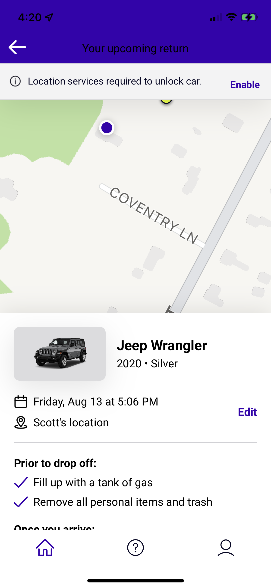
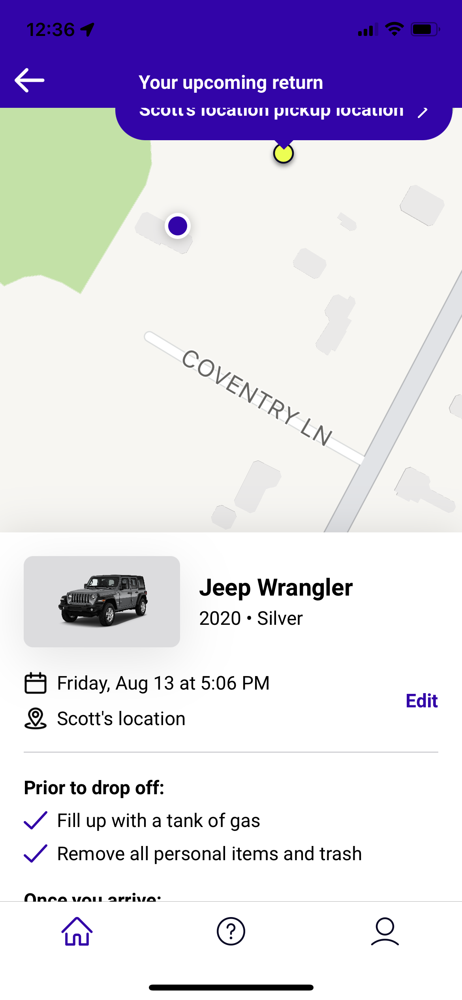
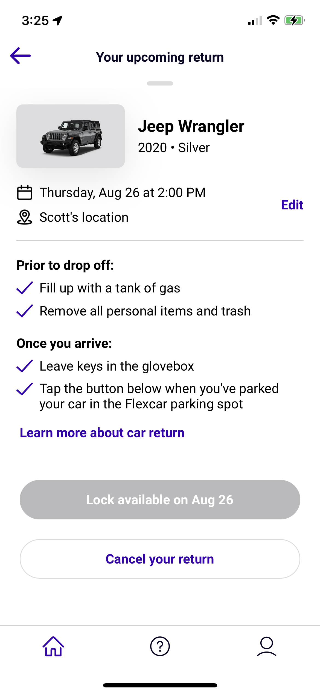
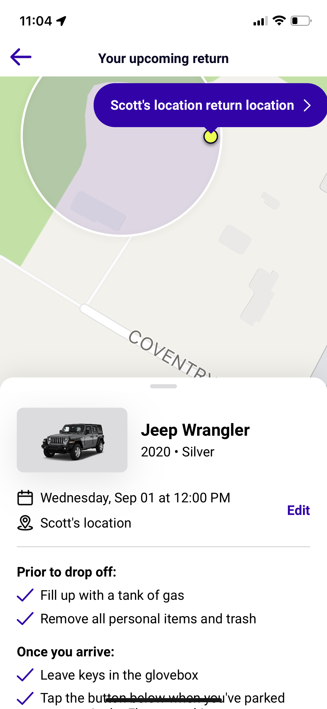

<P><a href="article/index.html">Creating a Reusable SwiftUI View</a></P?


<h1>Temporary Resume.</h1>

<a href="pdf-24.pdf">Resume</A>

<h2>Zipcar implementations</h2>


<br>

<BR>

<br>

<br>
    <video controls>
        <source src="Zipcar/RPReplay_Final1629499199.mov" type="video/mov">
    </video>
